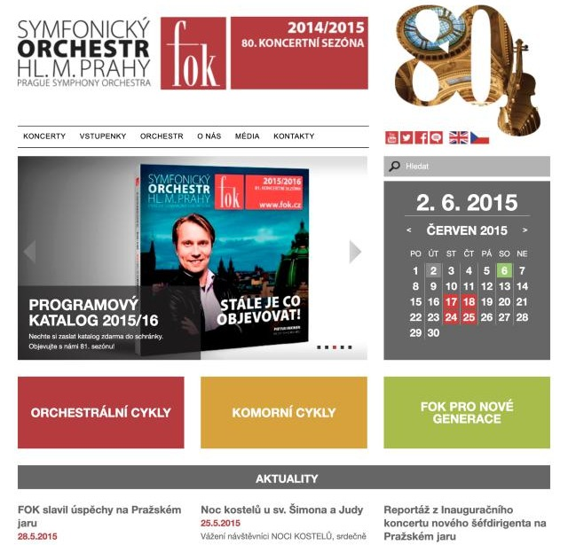
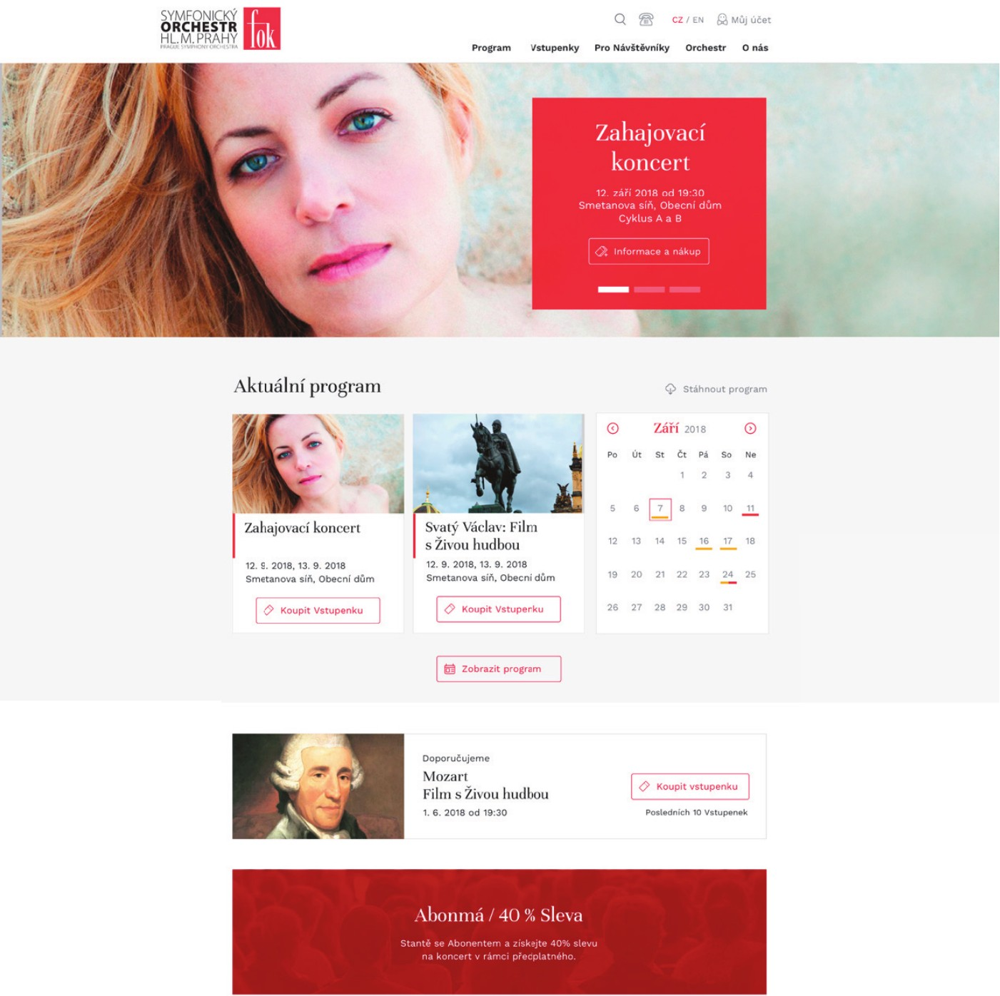
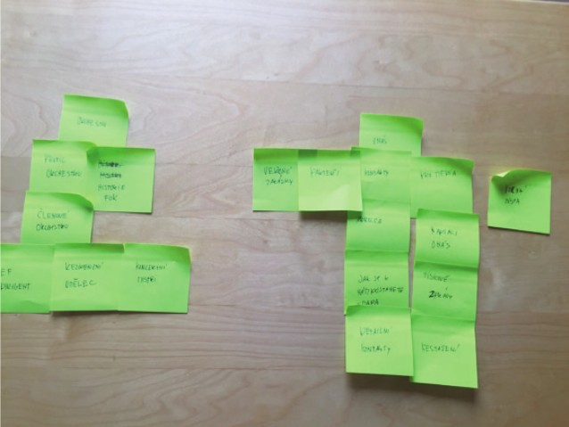
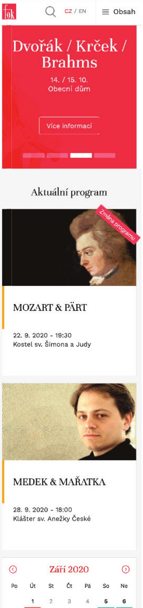

People got lost in the menu and didn't buy tickets. I rebuilt the website structure and designed it for desktop and mobile.


People didn't know where to look, so I started with research.

A quick workshop with the team. Together we decided what the site structure should look like.
“What should I wear?” People often asked this before a concert. Websites didn't answer it then, so we did. It helped SEO too.

There was no design system, so I built the look from scratch. Calm and classic, made for concert-goers. Plus a new section that boosted SEO.